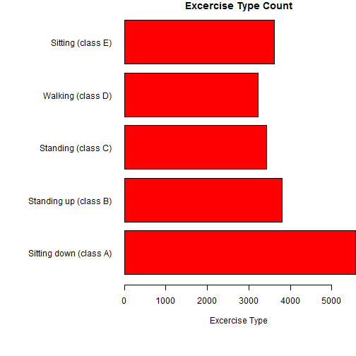

Human Activity Recognition - Exploring the Dataset
Developing Data Projects Course
Andrey Boytsov
Basic Information
- Purpose
- Get ready for Practical Machine Learning course
- Understand the dataset
- Explore it
- Or review the lessons, if you already took that course
- Explore real-life human activity recognition dataset
- Find the sensed features that can distinguish one activity from another
- Dataset
- Human Activity Recognition Dataset collected by Pontifical Catholic University of Rio de Janeiro
(Rio de Janeiro, Brazil) - http://www.puc-rio.br/
- Dataset reference: Velloso, E.; Bulling, A.; Gellersen, H.; Ugulino, W.; Fuks, H. Qualitative Activity Recognition of Weight Lifting Exercises. Proceedings of 4th International Conference in Cooperation with SIGCHI (Augmented Human '13) . Stuttgart, Germany: ACM SIGCHI, 2013.
Dataset Details
- Dataset available under Creative Commons license (CC-BY-SA)
- Contains information about following excercises: Sitting down (class A), Standing up (class B), Standing (class C), Walking (class D), Sitting (class E)

Dataset and Applicaiton
- Sensor positions: arm, belt, forearm, dumbbelt
- Sensor types: accelerometer, magnetometer, gyroscope
- Dataset contains following potential information sources (sensor readings): Roll - belt, Pitch - belt, Yaw - belt, Absolute acceleration - belt, Gyroscope - belt - X-axis, Gyroscope - belt - Y-axis, Gyroscope - belt - Z-axis, Accelerometer - belt - X-axis, Accelerometer - belt - Y-axis, Accelerometer - belt - Z-axis, etc.
- Application already performed initial data cleaning
- Before any data cleaning: 159 available information sources
- Before analyzing sensor reliability: 152 available information sources
- After full data cleaning: 52 available sensors
- Application transformed names to friendly readable format
- Both for sensor names and for activity names
- Transformation is automated
Using The Application
- Select the activities of interest using the checkboxes
- The activities selected on the left will be depicted in red
- The activities selected on the right will be depicted in blue
- Select the sensor reading in the drop-down menu
- Sensor readings that have too many N/As are already removed from the list
- Unrelated information sources (like number of the sliding window) are also removed from the list
- Analyze the histogram
- Select at least one activity for histogram to appear
- Turn on mean or median lines if required
- Analyze summary statistics at the bottom